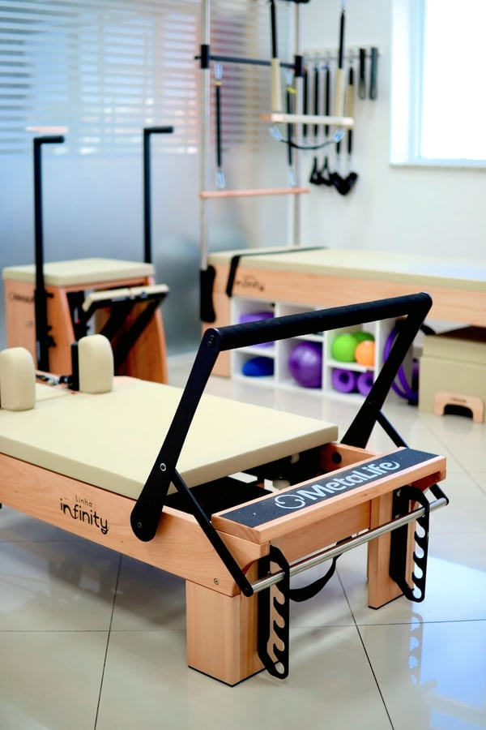
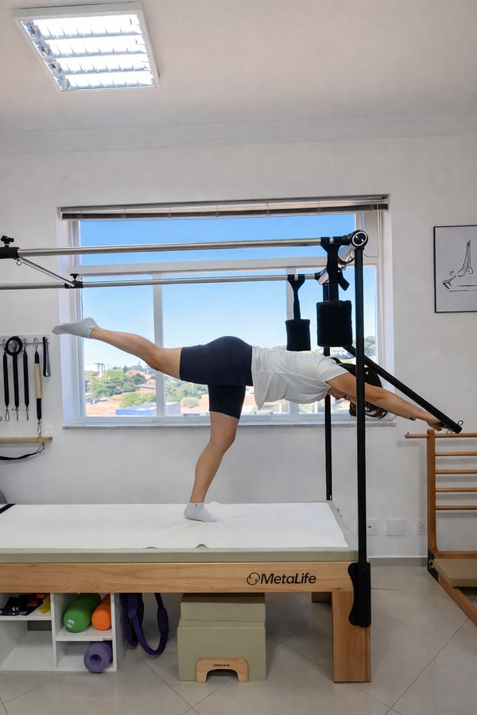
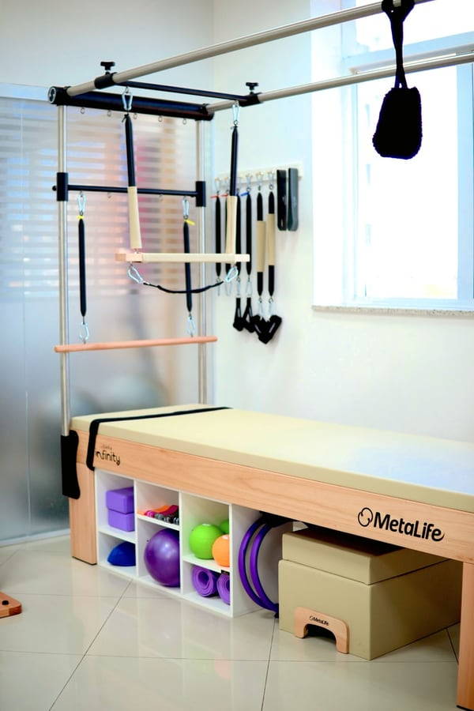
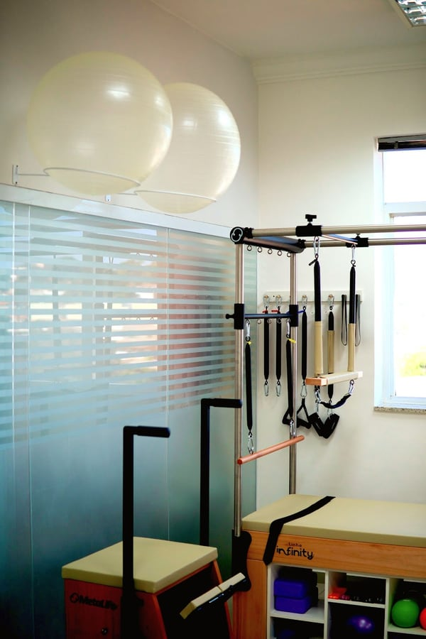
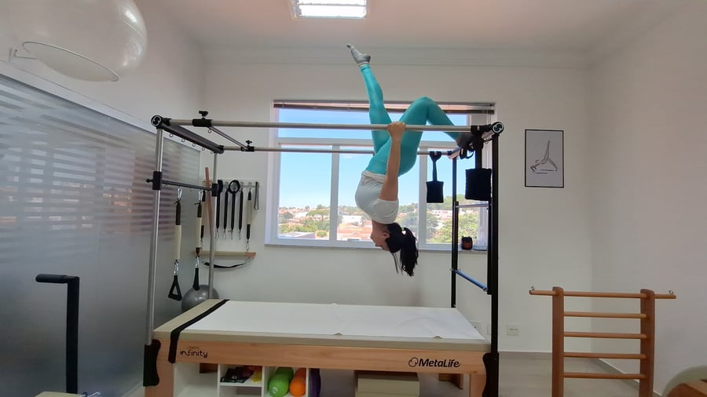
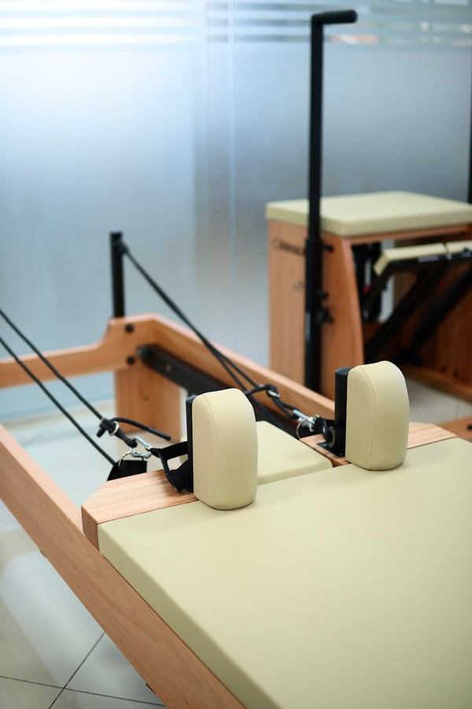
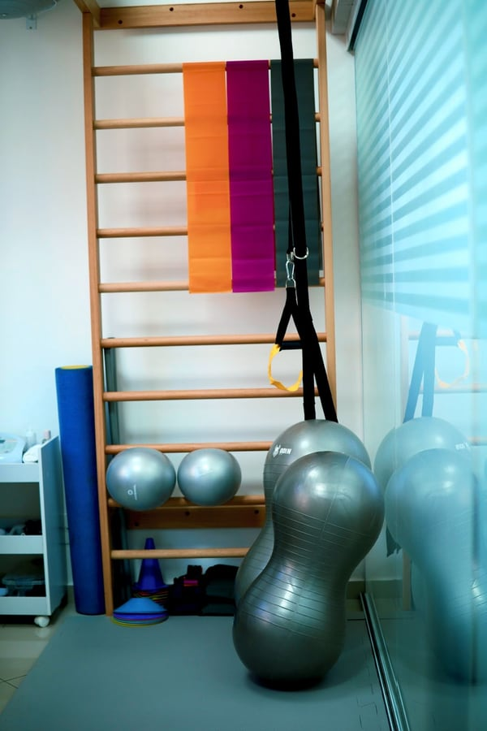
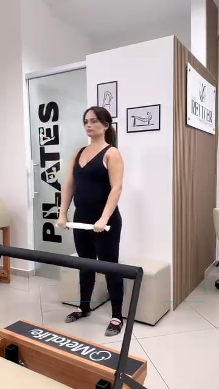

Reconecte-se com o seu corpo
Reabilitação funcional com atendimento individualizado, num consultório acolhedor no Jardim Guanabara. Reviva a sua liberdade de movimento.
Nota 5,0 em 29 avaliações no Google




Um consultório moderno, pensado para o seu cuidado
5,0nota no Google
29avaliações de pacientes
O Espaço Reviver é um consultório de reabilitação funcional, com estrutura dedicada à Fisioterapia e ao Pilates clínico. Aqui o foco é devolver qualidade de vida, autonomia e bem-estar.


Cada pessoa tem um plano
Acolhimento, técnica e planos de tratamento personalizados fazem parte do dia a dia. As aulas são pensadas de acordo com a necessidade de cada um.
Cuidado que começa antes da primeira sessão

Atendimento individualizado
Seu plano é montado a partir da sua dor, do seu ritmo e dos seus objetivos. Você é ouvido antes de qualquer exercício.
Estacionamento coberto
Estacionamento coberto, com manobrista e sem custo. Sua chegada fica mais tranquila.
Wellhub e TotalPass
Aceitamos Wellhub GOLD e TotalPass TP5+. Os horários para esses planos são limitados, então vale chamar no WhatsApp.
Do alívio de tensões à reabilitação funcional
Escolha por onde começar, ou fale com a equipe e a gente indica o caminho.
Fisioterapia Carro-chefeReabilitação funcional para prevenir e recuperar lesões.Ver detalhesFechar
Indicada para quem sente dores no pescoço, nas costas ou no ombro, ou quer se recuperar de uma lesão. O atendimento é individualizado e começa com uma avaliação. A partir dela, a equipe monta um plano de tratamento personalizado.
Agendar avaliaçãoPilates clínicoFortalecimento, postura e consciência corporal, com acompanhamento profissional.Ver detalhesFechar
Para quem busca mais qualidade de vida, melhora da postura ou reabilitação com segurança. As aulas podem ser individuais ou compartilhadas, sempre pensadas para a necessidade de cada aluno.
Agendar aulaLiberação miofascialTécnica manual para aliviar pontos de tensão no músculo.Ver detalhesFechar
Pode ajudar quem sente aquele “nó” no músculo, acorda travado ou carrega peso nos ombros e no pescoço. A técnica faz parte de um plano que também pode incluir exercícios e orientações.
AgendarMassagem relaxante e terapêuticaPara aliviar as tensões do dia a dia.Ver detalhesFechar
Indicada para quem precisa de uma pausa e quer relaxar o corpo e acalmar a mente. Também pode ser terapêutica, para tensões mais localizadas. Consulte valores e horários pelo WhatsApp.
AgendarDrenagem linfáticaAtendimento em ambiente tranquilo, com cuidado do início ao fim.Ver detalhesFechar
Uma das terapias manuais do espaço. Fale com a equipe para saber se é o indicado para você.
AgendarPedras quentesUma terapia de relaxamento para desacelerar.Ver detalhesFechar
Para quem quer descansar o corpo e a mente em um momento de pausa. Consulte valores e disponibilidade pelo WhatsApp.
AgendarFisioterapia para idososMovimento orientado para manter a autonomia.Ver detalhesFechar
Para quem quer continuar fazendo o que ama, com mais força, equilíbrio e confiança no dia a dia. O trabalho é feito com exercícios personalizados e um olhar atento para a história de cada pessoa. Familiares também podem chamar para tirar dúvidas.
Agendar avaliaçãoFisioterapia domiciliarAtendimento na sua casa.Ver detalhesFechar
Para quem prefere ou precisa ser atendido em casa. Fale com a equipe para combinar os detalhes do atendimento.
Saber como funciona
Valores e duração das sessões: consulte pelo WhatsApp.
Presença em cada sessão
Rafaela Borges apresenta o Espaço Reviver como um consultório de reabilitação funcional que une acolhimento, técnica e planos personalizados. Ao lado dela, Yasmin e Vitória fazem parte do time que recebe cada paciente.
Para elas, o cuidado vai além de tratar uma dor: é devolver qualidade de vida, autonomia e bem-estar, com fisioterapia individualizada, Pilates clínico e muita presença.
Rafaela BorgesEspaço Reviver
Dicas e movimentos para o seu dia a dia
Vídeos curtos da equipe para cuidar do corpo em casa. Cada corpo é diferente, então use como orientação geral.
-

4 exercícios para o ombro
Movimentos simples para mobilidade e fortalecimento.
-
Passa o dia no computador?
Exercícios rápidos para aliviar costas, ombros e pescoço.
-
Tensão miofascial
Entenda o que é aquele “nó” no músculo.
Três passos, sem complicação
Chame no WhatsApp
Conte onde você sente desconforto e o que gostaria de melhorar.
Faça sua avaliação
A equipe conhece você, ouve sua história e entende o que seu corpo precisa.
Aula experimental gratuita
[CONFIRMAR se a aula experimental gratuita continua]
Receba seu plano personalizado
O tratamento é montado para a sua dor, no seu ritmo e com os seus objetivos.
Tem Wellhub ou TotalPass?
Aceitamos Wellhub GOLD e TotalPass TP5+. Para usar:
- Abra o app Wellhub ou TotalPass.
- Procure por Espaço Reviver.
- Faça o check-in e venha conhecer o espaço.
Os horários são limitados. Chame no WhatsApp para conferir a disponibilidade.
Ver horários disponíveisO que diz quem já passou por aqui
Desde o primeiro atendimento, fui recebida com muito carinho, atenção e profissionalismo. A Rafaela e Yasmin demonstram verdadeiro cuidado com o paciente, buscando entender as necessidades individuais e oferecendo um atendimento humanizado e personalizado...
Andréa KaumoAvaliação no Google Estou encantada com o trabalho das meninas na clínica. Eu cheguei até lá com muitas dores de cabeça e no pescoço e a liberação que elas fizeram mudou muito a minha qualidade de vida...
carlag santosAvaliação no Google Excelente clínica! Atendimento humanizado, profissionais extremamente capacitados e muito atenciosos, a profissional Vitória tem mãos de fadas. Me senti segura e bem cuidada durante todo o processo de drenagem linfática corporal...
Tatiana MamoniAvaliação no Google Todas fisioterapeutas maravilhosas, me tiraram da crise, são super atenciosas, mas sem dúvida o comprometimento delas com o paciente é o grande diferencial. Recomendo muito!!!
Maria Custódia Amador CoelhoAvaliação no Google
Fácil de chegar, tranquilo de estacionar
Estamos no Centro Comercial Lumen, no Jardim Guanabara, com estacionamento coberto e gratuito no local.
- Endereço
- Rua Frei Manoel da Ressurreição, 1488, Sala 44
Centro Comercial Lumen, Jardim Guanabara
Campinas - SP, 13073-027 - Horários
Segunda a sexta 7h às 20h Sábado 7h às 12h Domingo Fechado - Telefone e WhatsApp
- (19) 99948-5664
Perguntas frequentes
Vocês aceitam Wellhub e TotalPass?
Sim. Aceitamos Wellhub GOLD e TotalPass TP5+. Abra o app, procure por Espaço Reviver e faça o check-in. Os horários são limitados, então chame no WhatsApp para conferir a disponibilidade.
Tem estacionamento?
Tem. O estacionamento é coberto, com manobrista e sem custo.
Vocês atendem em casa?
Sim, oferecemos fisioterapia domiciliar. Fale com a equipe pelo WhatsApp para combinar.
Quais são os horários de atendimento?
De segunda a sexta, das 7h às 20h, e aos sábados, das 7h às 12h. Não abrimos aos domingos.
Preciso de pedido médico?
Fale com a equipe pelo WhatsApp. Ela orienta você sobre o que é necessário no seu caso.
Quanto custa?
Os valores dependem do serviço e do plano. Consulte pelo WhatsApp, (19) 99948-5664.
O espaço é acessível para cadeira de rodas?
Sim. A entrada e o estacionamento são acessíveis para cadeira de rodas. Se tiver alguma dúvida sobre o acesso, é só avisar a equipe.
Ficou com alguma dúvida?
Chame a equipe no WhatsApp. A gente conversa com calma e ajuda você a dar o primeiro passo.
Falar no WhatsApp